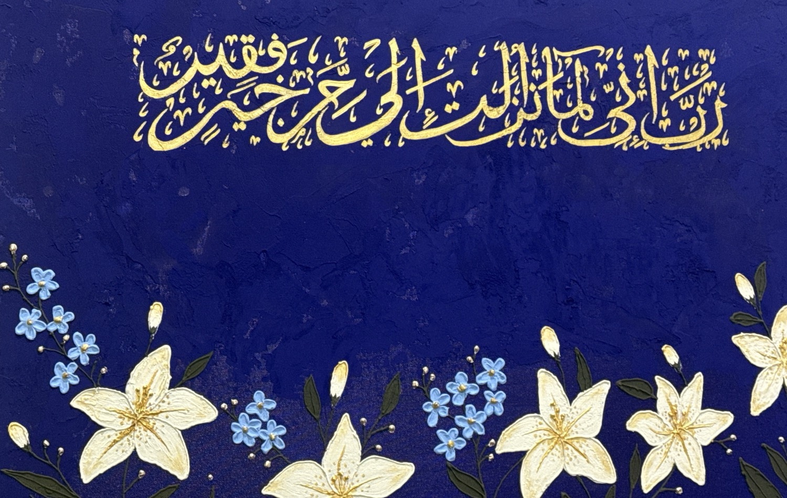
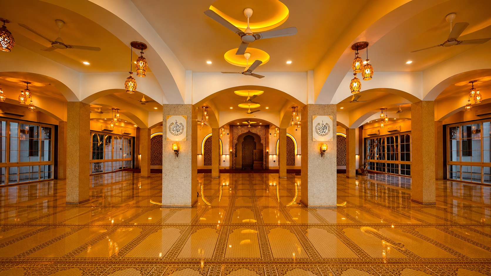
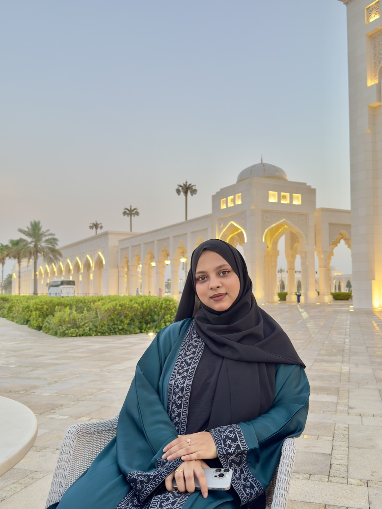
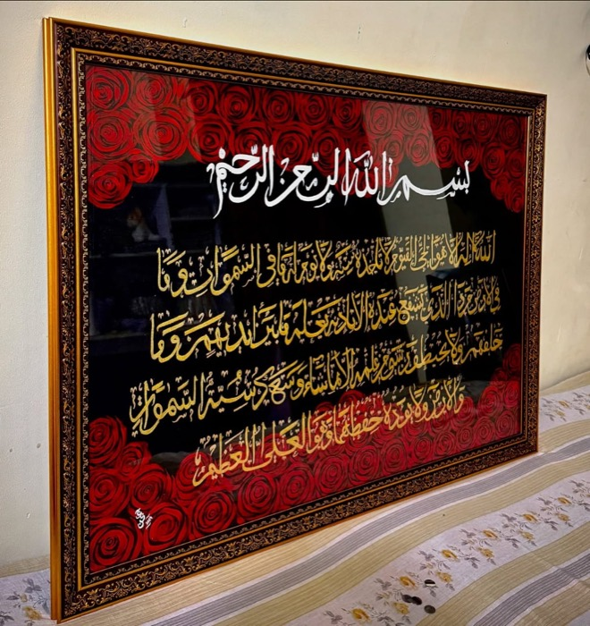
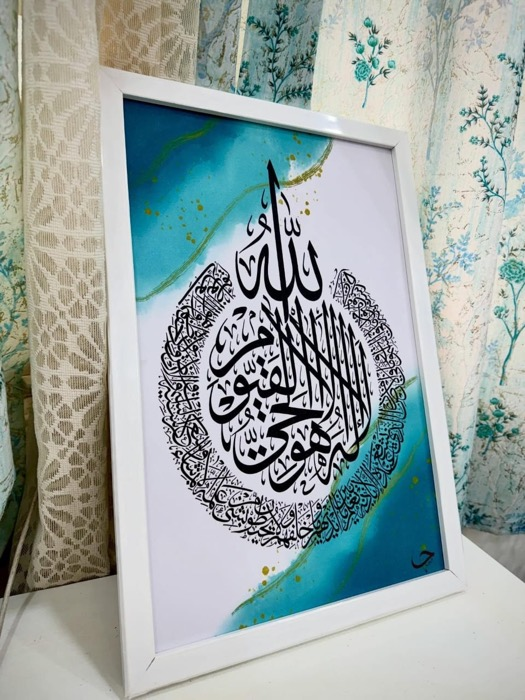

﷽
Where devotion becomes form.
Jabin Arts — original Islamic calligraphy painted by hand. Qur’anic verse illuminated in gold, bloom and lapis.
Some paintings decorate. These remember. Jabin paints sacred verse into gardens of lilies, roses and turning light — so a wall becomes a window.
i
It begins at the mosque
Where the words live — in stone, in light, in memory.
ii
Across the dunes
Patience is the true medium. Every verse travels slowly.
iii
Past the oasis
Where color drinks the light — turquoise, lapis, leaf of gold.
iv
And home to your walls
A painting is the journey’s last step — and yours begins here.
Selected works
Verses in bloom & gold


About the artist
Assalamu alaikum —
I’m Jabin Akhter Borah.
Welcome to my journey through art — a place where every painting carries a story of faith, beauty and feeling.
I paint what draws the heart toward its Creator: verses of the Qur’an, the quiet of nature, and the emotions that bind them together. My work weaves traditional Arabic calligraphy with contemporary texture, florals and modern design.
Art has never been only a passion — it is how I remember, and how I give thanks. Whether you are drawn to an original painting, a personalised commission, or simply a piece that brings peace into your home, I’m honoured to share this journey with you.
Thank you for visiting, and for supporting handmade art. May these works carry beauty, blessing, and a reminder of Allah’s mercy into your life.
— Jabin Akhter Borah ✿
From the studio
Wet ink, moving light

Jabin Arts on YouTube
painting films & studio stories
Watch the story
“My journey as an artist begins here.” Jabin presents her first masterpiece, The Temporal World — an exploration of life’s transience and the eternal truth beyond it, told over the finished canvas.
- Painting films
- Behind the canvas
- In her own words


@jabin_arts__
studio posts, reels & new drops
Follow the brush
New work reaches Instagram first — wet-ink close-ups, process reels, and finished pieces before they are framed.
- New drops first
- Studio reels
- Work in progress
or write to jabinakhterb@gmail.com · earlier works at jabinarts.in